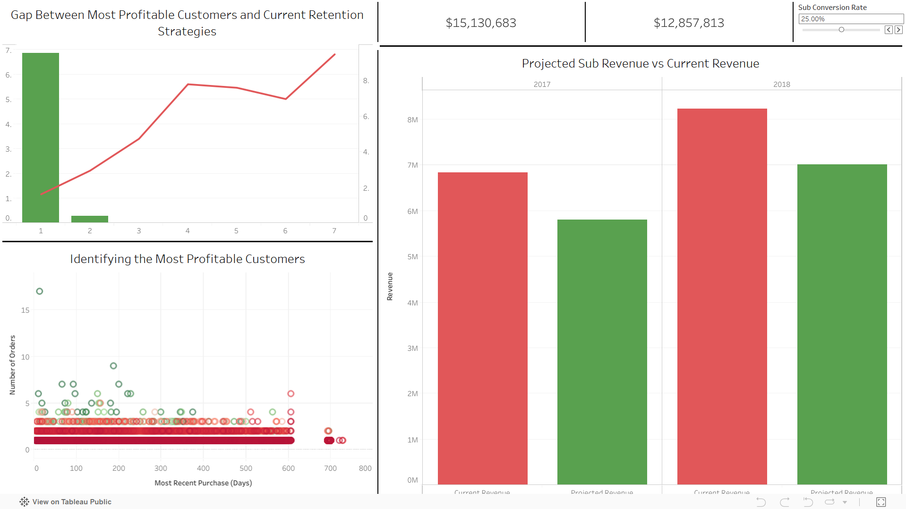
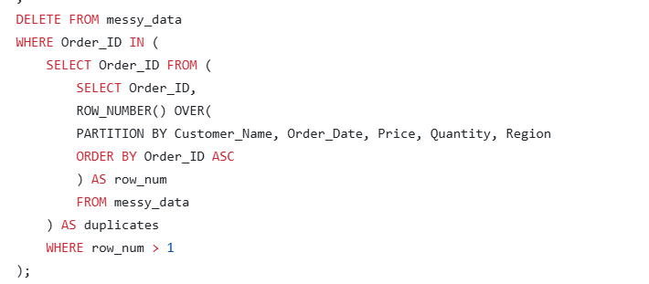
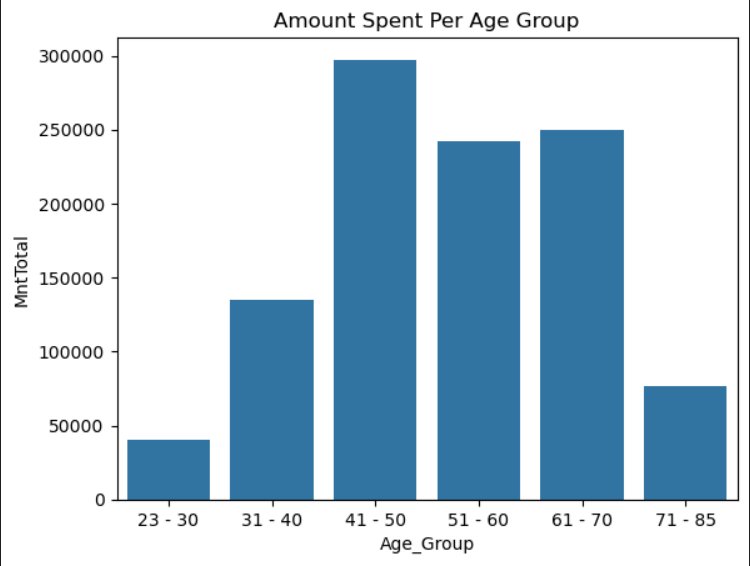
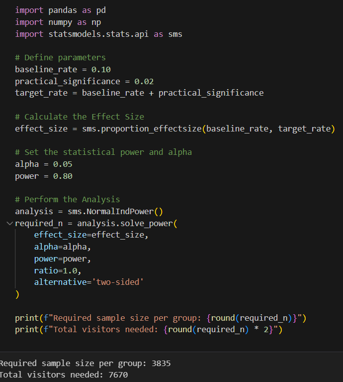

December, 2025
In this project I utilized SQL and tableau to give transformational data-driven insights.
Before my analysis this business had a high churn rate, an average customer value of 120$, and a low revenue predictability.
With my data driven insights on their side, they are on track to have a lower churn rate, an average customer value of over 500$, and a high revenue predictability.


A lot of my projects feature mostly clean datasets. In this project I reenforce my data cleaning skills with complex queries that can be used for cleaning large datasets with common issues.

In this project I utilized pandas, seaborn and matplotlib to provide visualizations, and insights that nontechnical stakeholders can understand.

I Utilized numpy and statsmodels.stats.api to prove that retention rates after 7 days had a statistically significant drop after making a change in a popular mobile game.

While still learning tableau, I put together a dashboard that showcases the relevant data for a call center, in a way that decision makers can easily understand.